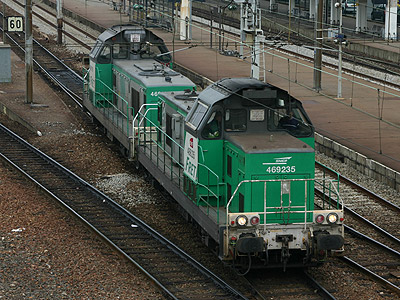

040 DG - BB 66000 - 69000
Les 040 DG sont des locomotives Diesel-électrique de moyenne puissance monocabine. Elles furent officiellement renumérotées BB 66000 au 1er janvier 1962. A cette date, 79 machines (040 DG 1 à 76, 78, 79 et 81) étaient en service à la SNCF, les locomotives suivantes recevant leur immatricualation définitive de construction.
La vaste famille des BB 66000 comporte de nombreuses sous-familles. Les deux séries principales, 66000 et 66400, sont bâties autour d'un moteur MGO à 16 cylindres. Les BB 66000 "petits numéros" ont été construites de 1960 à 1968 à 318 exemplaires. Elles sont dotées d'une génératrice à courant continu.
De nombreuses 66000 ont été transformées. En 1965, les 66098, 102 et 106, presque neuves sont remotorisées avec un moteur Pielstick 12 PA4 et deviennent
les BB 66614, 15 et 16.
A partir de 1985, 24 machines deviennent des BB 66700 adaptées pour la pousse à la butte. En 2003, dix machines supplémentaires sont transformées.
La remotorisation de la quasi-totalité des BB 66000 restantes depuis 2005 donne les BB 69000. Le rang de la machine dans la série restant le même. Les 69000 reçoivent la livrée Fret et des fanaux rouges.
Les dernières BB 66000 mues par leur MGO d'origine sont principalement utilisées par l'activité Infra. Il faut aussi noter qu'un lot de 66000 fut vendues à VFLI ou préservées par le TPCF.
Livrées
Les 040 DG ont débuté leur carrière dans une livrée bleu roi 203 avec bandes de visibilité en jaune bouton d'or 411. Très vite, dès 1961, le jaune fut remplacé par la nuance jonquille 401. Cette livrée ne fut appliquée sur les machines neuves que jusque 1964 mais a perduré jusque 1975 sur quelques locomotives.
Les machines suivantes furent mises en service avec la livrée "Diesel de Ligne" unifiée. Les panneaux latéreaux sont peints en bleu clair Diesel 205, le châssis et les dessus de capôts en bleu foncé 206. Les bandes, dont le motif en ailes de mouettes est modifié, passent au blanc cassé 703
Machines préservées
La BB 66001 a été repeinte en livrée d'origine, bleu roi et bandes jaune, et a retrouvé son immatriculation d'origine "040 DG 1". Elle a intégré la collection de la Cité du Train à Mulhouse et fut exposée de mai à octobre 2016 dans l'ancien dépôt de la Chapelle le temps de l'opération "Grand Train". Comme souvent lors de ces remises en état pour le musée, on peut noter quelques non-conformités telles que la forme des ailes de mouettes et les feux à pincettes trop modernes. Les gardes corps munis de passerelle n'ont pas pu être reconstitués.
Quant à la BB 66304, elle est préservée par l'ACPR de Toulouse qui l'utilise pour tirer ses trains touristiques sur le réseau national (RFN) pendant l'arrêt pour travaux de la locomotive 141 R 1126. L'association l'a repeinte dans une livrée vert wagon à filets jaune qui rappelle la livrée d'origine des BB 63000. Les 66000 étaient en revanche bleues à filets jaune au tout début de leur carrière.
Quelques données techniques
Constructeur : Alstom, Compagnie des forges de la Loire, Compagnie Electromécanique, SACM
Moteur thermique :
BB 66000 : SACM MGO V16 BSHR (à 16 cylindres) accouplé à une génératrice GD 803 à courant continu.
BB 69000 : MTU 12V 4000 R41
Moteurs électriques : un moteur TA 648 A1 à ventilation forcée par essieu.
Aptitude à l'UM
Pour plus d'info :
- Bibliographie
Loco revue n°630 (novembre 1999), n°653 (décembre 2001)
Le Train Spécial n°44 4/2005 : Les BB 66000
Ferrovissimo n°17 (novembre 2007)
Ferrovissime n°1 (janvier 2008), incluant Ferrovissimo n°18
- Ailleurs sur le Web
Les fiches BB 66000 et BB 69000 sur Wikipedia
Fiche technique des BB 66000 de Florent Brisou
L'inventaire des BB 66000 et BB 69000 sur Trains du Sud-Ouest
La BB 66001 repeinte en livrée d'origine
et imatriculée 040 DG 1 à "Grand Train" (14/10/2016)
La BB 66013 à Morcenx, depuis vendue à VFLI (28/03/2005)

La BB 66062 à Clichy-Levallois avec un train désherbeur (22/05/2003)

La BB 66192 Fret à Reims (04/06/2004)

Les BB 69235 et 69199 manoeuvrent en UM à Chartres (02/11/2007)

La BB 69277 entre Béziers et Narbonne (12/07/2012)
La BB 69288, à Nîmes. Elle a conservé sa robe bleue réhaussée du logo Infra malgré son nouveau moteur MTU (17/11/2012)
La BB 69268 dans sa nouvelle livrée Infra, à Nîmes (21/03/2013)

Les BB 69288 et 69291 sur une tournée Chasse-neige quittent Nîmes pour dégager la ligne des Cévennes (22/03/2013)
La BB 66304 préservée par l'ACPR et repeinte dans une livrée inédite
(Séverac-le-château, 20/06/2015)